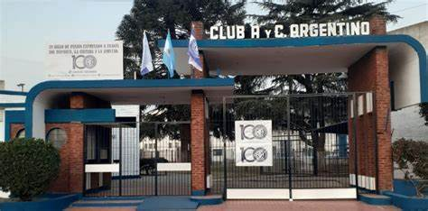

|
Club Atlético y Cultural Argentino
|
Historia del Club Atlético y Cultural Argentino

Fundado en 1926, el Club Atlético y Cultural Argentino ha sido una institución clave en el desarrollo deportivo y cultural de General Pico. Con una rica historia en el fútbol, el club también es conocido por su dedicación al básquet y otras disciplinas.
Instalaciones y Actividades
| Instalación |
Descripción |
| Estadio |
Capacidad para 10,000 espectadores, césped natural. |
| Gimnasio |
Equipado para actividades de baloncesto y otros deportes. |
|
© 2024 Club Atlético y Cultural Argentino. Todos los derechos reservados.
|